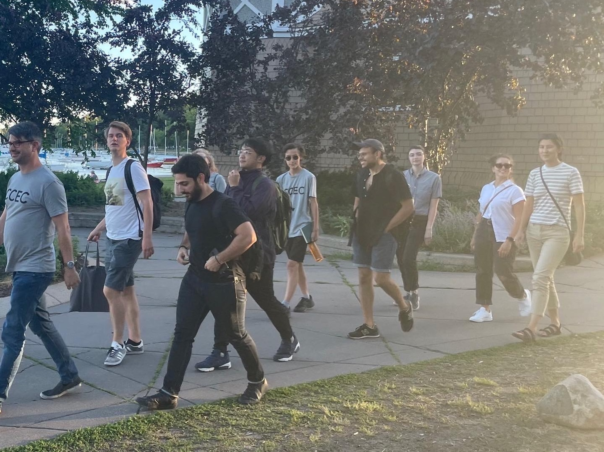

Minnesota Center for Canon Expansion and Change, Summer Program 2022

The above picture is the only evidence I have that I was actually at this event with other people. All other pictures I have, I am standing alone in an empty room.
The Event
This was a workshop put on by my history of early modern philosophy professor, Jessica Gordon-Roth, and two of her colleagues, Dwight K. Lewis and Bennet McNulty. The event's stated purpose was to encourage a more inclusive way of teaching the period (i.e. to 'expand the philosophical canon') in order to fight, one, the homogeniety of philosophy as a profession and, two, the idea that philosophy was and is only done by straight white men. All participants were expected to end the program having created a syllabus that they could use the next time they taught the class (The program is for professors). I was a student volunteer there to help run things smoothly, and in return I got to talk to cool people. I also made a syllabus.
Link to the program's website!
Minnesota Center for Canon Expansion and Change, Summer Program 2023
I returned once again this year! And once again it was a highlight of the year! Talking to and being around so many cool and amazing philosophers doing philosophy, I learned so much. I noticed also, this year I felt much less internal pressure throughtout the conference, so it was that much more enjoyable! I didn't produce anything, so I didn't think it warranted another page, but what I do have this time is pictures: